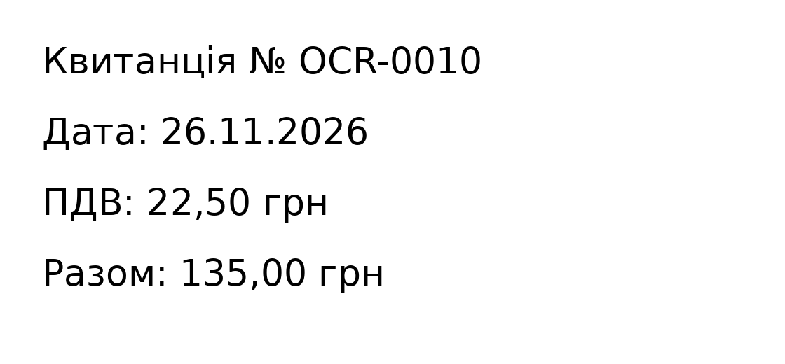

Працюю над інструментами, що перетворюють скани, CSV та інші вхідні дані на перевірений результат. Задачі з продуктивності починаю з відтворюваного виміру.
Проєкти
DocuMind Smart Vision
Сканування й обробка документів на iOS та окремий Android-прототип локального вилучення реквізитів. У тестовому наборі з українським та англійським текстом результати правил збіглися для 79 із 80 полів на 20 синтетичних документах.
Показник стосується правил. Фізичний телефон і Gemini Nano очікують перевірки.
Приклад українського OCR
Linux Tesseract із ukr+eng прочитав дату й суму, але спотворив номер. Правила залишили номер порожнім.
Показати квитанцію та результат

2026-11-26 · 135.00 UAH · номер не прийнято
Vesuvius Challenge — Villa
Три зміни у форку для запису кешу, планування 3D-інференсу та побудови OME-Zarr. Виміри стосуються окремих операцій.
Збіг плану та побайтова ідентичність шести рівнів OME-Zarr перевірені у відповідних сценаріях.
Браузерна перевірка CSV і два інтерфейси виправлення. Flagsmith Experimentation призначав варіанти і реєстрував покази та валідні експорти. Обробка самого CSV відбувається у вкладці.
Подано на Toggle Wars за інформацією власника.
Simulated browser traffic
Сеанси Playwright
160
Валідні експорти
115
Успішні тести
27
Контроль 47/78. Inline 68/82. Симуляція підтверджує збір подій.